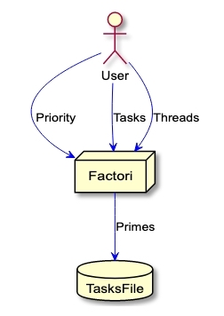
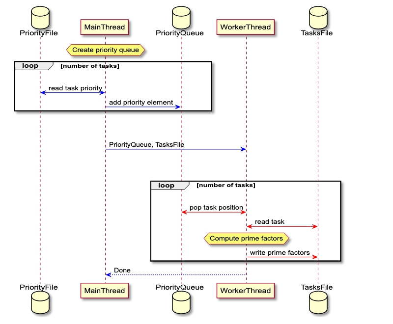
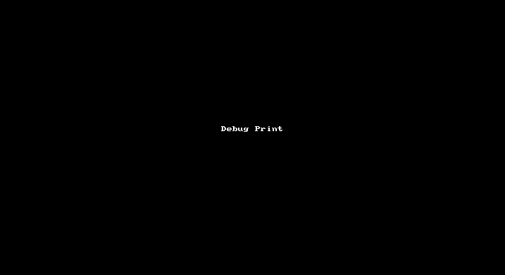

|
EX3
|


|
|
EX3
|
|

The purpose of of this excersise is to learn about multi-threaded programming. 
Full detailes of the excersise instruction are located in the provided _Ex3_instructions.pdf_ file provided by course staff.
Two main modules described and specified in the instructions are:
Flow chart:

Additional modules created for modularity:
There is code documentation which was generated by Doxygen.
It can be found under the Docs folder in the repo.
To localy open the documentation click here.
For online version, (hoted by github pages), click here
First things first, the **main()** function is defined in _factori.c_.
All other modules will reveal their external function in their external header, which will be located under the include folder. Private header files will be located in same directory of module in parallel to the source file of same module.
Here are basic file structure conventions:
ext.h_, are used to expose definition, fucntion and types. Should only include the most basic libs.Template files of all three types are located under: resources/template
To achieve a working and clear code, we will try to follow the below guidelines:
print_error_msg() for this purpose.DEBUG_PRINT() which will propogate the parameters to printf function, FACTORI_DEBUG_PRINT_ON** is defined, and will do nothing otherwise.To enable debug printing, with easier toggle on/off of specific verbosity levels.
Each DEBUG_PRINT statment will be assosicated with a specific verbosity level.
A global **DEBUG_VERBOSITY_LEVEL** will define how many prints of logs we wish to see.
The higher it is define, the more prints should be shown.
To fully utilize this mechanism, each print statement should think out the how needed are those prints.
For example, DEBUG_PRINT_FUNCTION_START() assigns level one, because it is useally usefull to have a function
start and end prints - lets you know a specific function was called and executed.
As a rule of thumb, if the print statment is located in a "deep" or long loops, it is wise to assign
a larger debug level, so it will show up on when needed to avoid clutter.
This mechanisim can be twicked by setting the below defines in the _common_types.h_ file.
caution: **FACTORI_DEBUG_PRINT_ON** must be defined to use any of the printing debug utilities.
This is how to add a basic debug when writing a new function: 